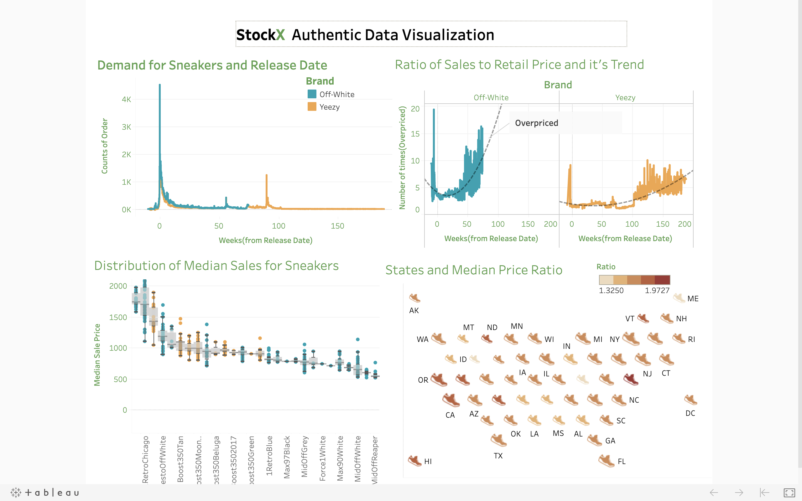

Data Dashboard for StockX Contest
StockX Data Contest 2019
The StockX Challenge is a call for data and sneakers nerds to have fun.
 Source: StockX
Source: StockX
The basic idea is this: they give you a bunch of original StockX sneaker data, then you crunch the numbers and come up with the coolest, smartest, most compelling story you can tell. It can be literally anything you want. A theory, an insight, even just a really original data visualization. It could be a novel hypothesis about resale prices you’ve always wanted to test. Or maybe it’s just a beautiful chart to visualize the data. It can be on any subject – sneakers, brands, buyers, or even StockX itself. Whatever you find interesting, just follow your bliss.
I also gave a shot at trying to come up with something useful. Below is my finished data dashboard.
My Data Dashboard for StockX

The link for the Tableau worksheet is here.
Dashboard Calculations
Key Metrics Defined:
- Price Ratio: Ratio of Sales to Retail Price for Each Sneaker
- Weeks: (Order Date - Release Date) Converted in Weeks
- Median Price Ratio: Chosen to eliminate the effect of asymmetrical range of dates (2017-2019 not complete as 2018) and counts of sneaker sales
- Color Scale: For two brands are consistent whenever there is plot relating to brands
Key Insights from the Dashboard
1. Order Volume by Brand Over Time
Orders of Sneakers by brand for weeks from Release Date
This plot shows the total count of orders for different sneakers of two brands. Both brands are ordered before the release date. Off-White has more orders than Yeezy in the dataset.
It’s fascinating how the demand for Yeezy increased at around 90 weeks after the release of the shoes.
4. Geographic Market Analysis
Median Price and States
This visualization examines the median price ratio across all states, with color scale representing the ratio and bubble size indicating total sales volume.
Geographic Insights: - High Premium States: Delaware, Vermont, and Utah had sales with high price ratios - High Volume Markets: California and New York show significant sales volumes (represented by larger bubble sizes) - Market Calculation: Relative size calculated using logarithm of total sales in each state - Low Activity Markets: States like Wyoming show both lower sales volume and lower price ratios
Data Methodology
The analysis focuses on understanding: - Temporal patterns in sneaker demand and pricing - Brand comparison between Off-White and Yeezy - Geographic variations in market behavior - Price premium evolution over time
Interactive Dashboard
Explore the full interactive dashboard with filters and detailed breakdowns: StockX Data Contest Dashboard
Conclusion
This analysis reveals the complex dynamics of the sneaker resale market, showing how brand prestige, time since release, and geographic location all influence pricing patterns. The data demonstrates the significant premiums that collectors are willing to pay, particularly for limited releases from premium brands like Off-White and Yeezy.
The StockX contest provided an excellent opportunity to apply data visualization skills to an interesting and culturally relevant dataset, uncovering insights about consumer behavior in the luxury streetwear market.
Data Dashboard for StockX Contest – Kapil Khanal Data Dashboard for StockX Contest – Kapil Khanal Data Dashboard for StockX Contest – Kapil Khanal Kapil Khanal Personal Portfolio of Kapil Khanal Personal Portfolio of Kapil Khanal